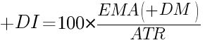
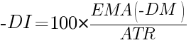
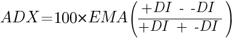
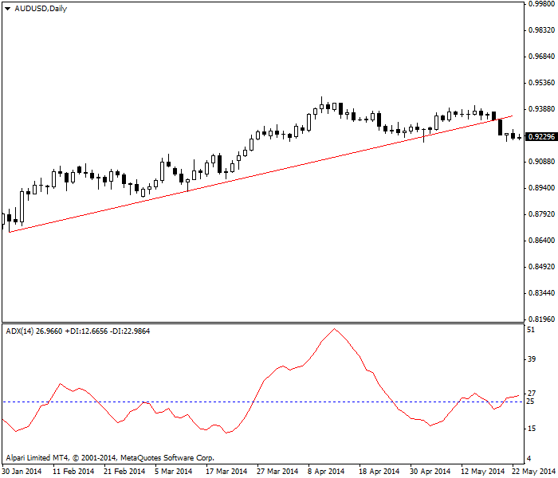
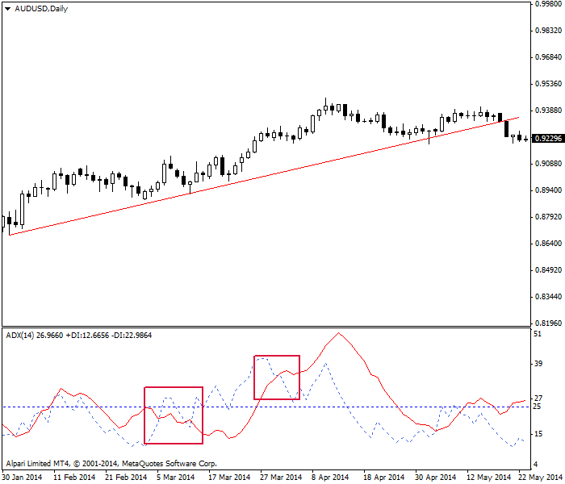
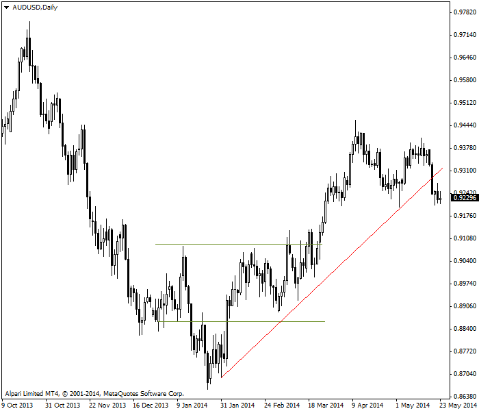
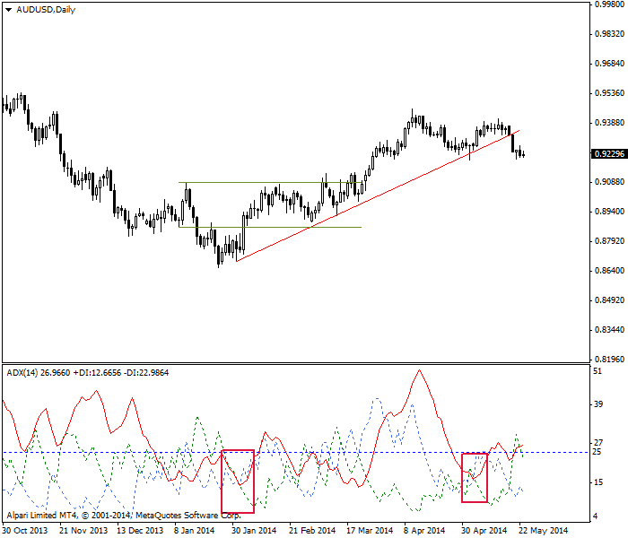

<!DOCTYPE html>
<html>
</html>
<head>
  <meta charset="utf-8">
  <meta http-equiv="X-UA-Compatible" content="IE=edge">
  <title>外汇站（fx-z.com） - 平均动向指数</title>
  <meta name="description" content="">
  <meta name="viewport" content="width=device-width, initial-scale=1">
  <meta name="robots" content="all,follow">
  <!-- Bootstrap CSS-->
  <link rel="stylesheet" href="vendor/bootstrap/css/bootstrap.min.css">
  <!-- Font Awesome CSS-->
  <link rel="stylesheet" href="vendor/font-awesome/css/font-awesome.min.css">
  <!-- Google fonts - Roboto-->
  <link rel="stylesheet" href="https://fonts.googleapis.com/css?family=Roboto:400,300,700,400italic">
  <!-- owl carousel-->
  <link rel="stylesheet" href="vendor/owl.carousel/assets/owl.carousel.css">
  <link rel="stylesheet" href="vendor/owl.carousel/assets/owl.theme.default.css">
  <!-- theme stylesheet-->
  <link rel="stylesheet" href="css/style.default.css" id="theme-stylesheet">
  <!-- Custom stylesheet - for your changes-->
  <link rel="stylesheet" href="css/custom.css">
  <!-- Favicon-->
  <link rel="shortcut icon" href="img/favicon.png">
  <!-- Tweaks for older IEs--><!--[if lt IE 9]>
    <script src="https://oss.maxcdn.com/html5shiv/3.7.3/html5shiv.min.js"></script>
    <script src="https://oss.maxcdn.com/respond/1.4.2/respond.min.js"></script><![endif]-->
</head>
<body>
  <div id="all">
    <div class="container-fluid">
      <div class="row row-offcanvas row-offcanvas-left"> 
        <!--   *** SIDEBAR ***-->
        <div id="sidebar" class="col-md-4 col-lg-3 sidebar-offcanvas">
          <div class="sidebar-content">
            <h1 class="sidebar-heading"> <a href="https://fx-z.com">fx-z.com</a></h1>
            <p class="sidebar-p">介绍外汇相关的基本知识，告诉您如何进行自己的技术面和基本面分析，讲解先进的交易理念，并且为您阐述失败交易者与专业交易者之间的真正区别。 </p>
            <p class="sidebar-p">通过这些课程的学习，您将学会如何根据自己的优势来应用情绪分析，还将了解真实世界的事件会对货币汇率产生什么影响，央行在外汇市场中所发挥的作用，以及交易者在颇受欢迎的即期外汇交易中有哪些选择方案。 </p>
            <ul class="sidebar-menu">
                <!-- Link-->
                <li class="sidebar-item"><a href="https://fx-z.com" class="sidebar-link">首页</a></li>
                <!-- Link-->
                <li class="sidebar-item"><a href="cihui.html" class="sidebar-link">外汇词汇</a></li>
                <!-- Link-->
                <li class="sidebar-item"><a href="ebook.html" class="sidebar-link">获取外汇电子书</a></li>
            </ul>
            <p class="social"><a href="https://www.forextimechina.com.cn/zh?form=IZIN" target="_blank"data-animate-hover="pulse" class="external facebook"><i class="fa fa-eur"></i></a><a href="https://www.forextimechina.com.cn/zh?form=IZIN" target="_blank" data-animate-hover="pulse" class="external gplus"><i class="fa fa-gbp"></i></a><a href="https://www.forextimechina.com.cn/zh?form=IZIN" target="_blank" data-animate-hover="pulse" class="external twitter"><i class="fa fa-rmb"></i></a><a href="https://www.forextimechina.com.cn/zh?form=IZIN" target="_blank" title="" class="external instagram"><i class="fa fa-dollar"></i></a><a href="https://www.forextimechina.com.cn/zh?form=IZIN" target="_blank" data-animate-hover="pulse" class="email"><i class="fa fa-money"></i></a></p>
            <div class="copyright text-center text-md-left">
             
              
            </div>
          </div>
        </div>
        <!--   *** SIDEBAR END ***  -->
        <!--   *** DETAIL ***-->
        <div class="col-md-8 col-lg-9 content-column white-background">
          <div class="small-navbar d-flex d-md-none">
            <button type="button" data-toggle="offcanvas" class="btn btn-outline-primary"> <i class="fa fa-align-left mr-2"></i>菜单</button>
            <h1 class="small-navbar-heading"> <a href="https://fx-z.com/8-10.html">下一篇 </a></h1>
          </div>
          <div class="row">
            <div class="col-xl-10">
              <div class="content-column-content">
                <h1>平均动向指数</h1>
     <p>
    平均动向指数（ADX）是 Welles Wilder 于 1978 年发明的另一个指标。如果您视觉上已经适应一条上行线总是意味着价格正在上涨，那么对您来说，ADX 将非常难用。实际上，ADX 衡量趋势强度，而不考虑趋势方向，因此当下行趋势走强时，ADX 线可能向上走。
</p>
<p>
    ADX 通常被称为领先指标，原因是其动量在价格到达顶部或底部之前减弱，然后开始反转。这是 Wilder 的假设，而且总体而言是合理的，但请记住，所有动量指标在趋势情况下表现最佳，但在区间交易的情况下会给出错误信号。实际上，ADX 的一项主要应用就是区分趋势情况和区间交易情况。
</p>
<p>
    ADX 几乎总是与另外两个指示方向的指标一起绘制：反方向变动指标（-DI）和正方向变动指标（+DI）。这样，您将兼顾趋势的强度和方向。
</p>
<p>
    ADX 被绘制为一条线，附有从零至 100 以内的数值。25 是“弱趋势或无趋势”与趋势之间的分界线。趋势在 25 至 50 之间走强，并在 50 至 75 之间非常强势。若数值到达 75 至 100，这说明趋势非常强，您应该留意价格是否超买或超卖。
</p>
<p>
    使用 ADX 并不难，但计算 ADX 却非常复杂。与 Wilder 的大部分指标一样，ADX 侧重近期范围内的相对最高价和最低价，而不是开盘价/收盘价关系。首先，您必须计算方向性移动，缩写为 DM。当价格趋势上行，DM 被计为正值：+DM。它被称为正向 DM 或 正 DM，也被称为上移。若方向下行，DM 被计为负值或 –DM。它被称为负向 DM 或 负 DM，也被称为下移。
</p>
<p>
    当今日最高价减去昨日最高价为正值（上移），而且该值大于昨日最低价减去今日最低价的值（下移），同时大于零，则计为 +DM。
</p>
<p>
    当下移 &gt; 上移，而且下移 &gt; 0，则计为 -DM。
</p>
<p>
    实际 +DI 指标的计算方式为：
</p>
<p>
     
</p>
<p>
    而 -DI 部分的计算方法与之相似：
</p>
<p>
    
</p>
<p>
    请注意，如果 +DM 为负数，该值将为 0，而且如果 –DM 指标为正数，该值将为 0。Wilder 对 DM 和 ATR 采用 14 天时段，但您也可以使用其他时段或将 EMA（指数移动平均值）修改至不同版本。
</p>
<p>
    最后，我们得出：
</p>
<p>
    
</p>
<p>
    Wilder 发明 ADX（以及他发明的所有指标）的时间早于计算机的出现时间。幸运的是，如今每一个程序都包含预设版 ADX、分量、-DI 和 +DI。不过，掌握其计算方法是值得的，因为 ADX 中有大量平滑处理。DM 分量通过排除内部天数进行平滑处理，而 ADX 通过除以 ATR 进行平滑处理。这样做的优势是能够获得真正可靠的指标，但该指标将相对滞后且难以阐述。在以下图片示例中，我们看到较之 ADX 线高于 25 的时间，价格上移的时间要整整早六个时段，而 25 是值得交易的强趋势标准。
</p>
<p>
     ADX 切换至趋势模式的时间滞后 6 个时段。
</p>
<p>
    <strong>ADX 的实际使用</strong>
</p>
<p>
    现在我们加入 +DI，如以下图表所示（蓝色虚线）。左侧 +DI 线与红色 ADX 线的交叉部分表示上涨趋势正在形成。右侧交叉部分表示该趋势正在结束。对左侧交叉部分思考一会儿，会发现该趋势似乎太晚。但重新观察价格——会发现价格在区间震荡，而不是形成趋势。
</p>
<p>
     ADX 与其分量之一 —— +DI 交叉。
</p>
<p>
    下图的尺寸更大，也展示了相同的情况。我们能画出一条红色的上升支撑线，这可能会使我们忽视由金线标注的不利横向移动。在金线结束前，我们一直未看到对前一个最高价的突破。我们的眼睛可能会错过它，但 ADX 能正确识别它。如果您非常厌恶风险，ADX 将是您的最佳伙伴。
</p>
<p>
     ADX 显示我们仍处于区间内。
</p>
<p>
    现在，我们可以看到包含所有 ADX 分量的图表。–DI 为绿色。请注意，当顶部窗口的价格开始上升时，-DI 跌至 +DI 以下，而且形成上升趋势时，-DI 大部分时间都保持一致。与所有交叉系统一样，+DI 上穿 –DI 意味着买入信号。在最右侧，支撑线已经断裂。–DI 上穿 +DI。同样，请不要被上升的指标误导。它是指下移强度增加，而不是价格上升。此处，–DI 上穿 +DI 代表卖出信号。您可能会一厢情愿地认为，支撑线的下行突破只是短暂情况，但 ADX 系统告诉你别犯傻——请出场。
</p>
<p>
     ADX 与 +DI 和 -DI 的交叉部分。
</p>
<p>
    遗憾的是，您会看到许多无关交叉，而且这些交叉容易让您极度混淆。因此，最好将 ADX 与其他确认指标相结合，包括 MACD 和形态识别。
</p>
<p>
    <br/>
</p>
<p>
    <br/>
</p>
              </div>
            </div>
          </div>
        </div>
      </div>
    </div>
  </div>
  <!-- JavaScript files-->
  <script src="vendor/jquery/jquery.min.js"></script>
  <script src="vendor/popper.js/umd/popper.min.js"> </script>
  <script src="vendor/bootstrap/js/bootstrap.min.js"></script>
  <script src="vendor/jquery.cookie/jquery.cookie.js"> </script>
  <script src="vendor/owl.carousel/owl.carousel.min.js"></script>
  <script src="vendor/masonry-layout/masonry.pkgd.min.js"></script>
  <script src="js/front.js"></script>
</body>